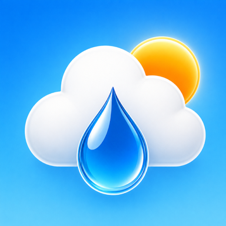

Ce que fait le ciel, expliqué simplement. Chaque article est disponible en 7 langues.
Chargement des articles…
Les actualités s’affichent avec JavaScript. Vous pouvez aussi les lire sur la page Actualités.